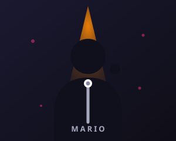

Horizonte — Estreno
Teatro Principal · MadridGran estreno de la nueva gira con formato escénico completo.
Artista escénico · Productor musical
Música, teatro y emoción en directo. Más de una década creando espectáculos que conectan con el público de principio a fin.
01 · Sobre mí
Me llamo Mario y llevo toda la vida subido a un escenario. Empecé tocando en locales pequeños de barrio y hoy dirijo mis propios espectáculos entre la música en vivo, el teatro y la producción creativa.
Mi objetivo es simple: que cada función sea una experiencia inolvidable. Trabajo con un equipo fijo de músicos, técnicos y creadores que comparten mi obsesión por el detalle y la cercanía con el público.

02 · Trayectoria profesional
De los escenarios pequeños a las grandes giras, paso a paso.
Fundé mi primera agrupación y debuté en salas de mi ciudad natal.
Publiqué «Noches de neón», grabado íntegramente en vivo ante 300 personas.
Recorrimos 15 ciudades con un espectáculo escénico de gran formato.
Creé mi propio sello y comencé a producir espectáculos para otros artistas.
Nueva gira «Horizonte» con estreno confirmado para la próxima temporada.
03 · Próximos espectáculos
No te pierdas las próximas fechas. Entradas disponibles en taquilla y online.
Gran estreno de la nueva gira con formato escénico completo.
Formato íntimo, repertorio seleccionado y encuentro con el público.
Celebración del décimo aniversario del primer disco en directo.
Show especial con invitados y estrenos exclusivos de la gira.